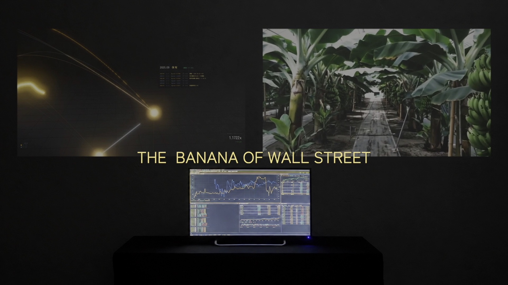

Overview
- Artist: Atsuya Tsuchida
- Format: Art Project & Installation
- Year: 2025-
Concept
「THE BANANA OF WALL STREET」は、世界の貿易市場でのバナナの価格変動を、AIが株を自動取引する自作のシステムに学習させ、そのシステムの判断を元に実際に投資を行う作品である。
バナナは、その流通と生産の歴史をたどると、輸送技術の発達、プランテーション経営、労働搾取と関わりが強く、大量消費に基づく生態系の単純化が人間の手によって行われるなど、資本主義と深く結びついた作物だといえる。
一方、株式は資本主義が歴史的に築き上げてきた制度的基盤の一つであり、その動態を可視化する存在でもある。
本プロジェクトでは、AIによる株式自動取引システムを通じてバナナと金融市場を結びつけることで、資本主義の新たな捉え方を模索する。
同時に、利益を最優先する通常の自動取引とは異なるオルタナティブなAIの使い方を試みることで、この時代におけるAIと人間の関わり方についても再考する。
Selection
- 令和8年度 文化庁メディア芸術クリエイター育成支援事業 国内クリエイター発表支援プログラム 採択